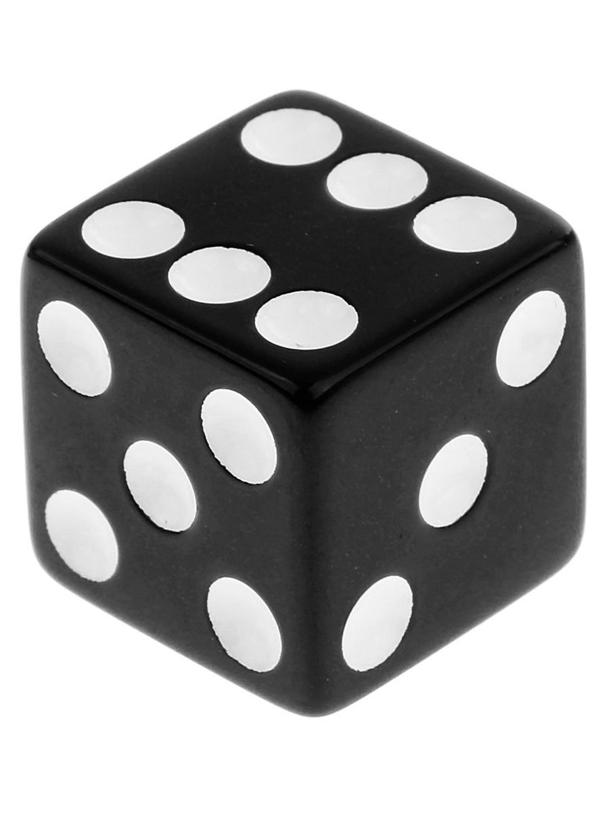
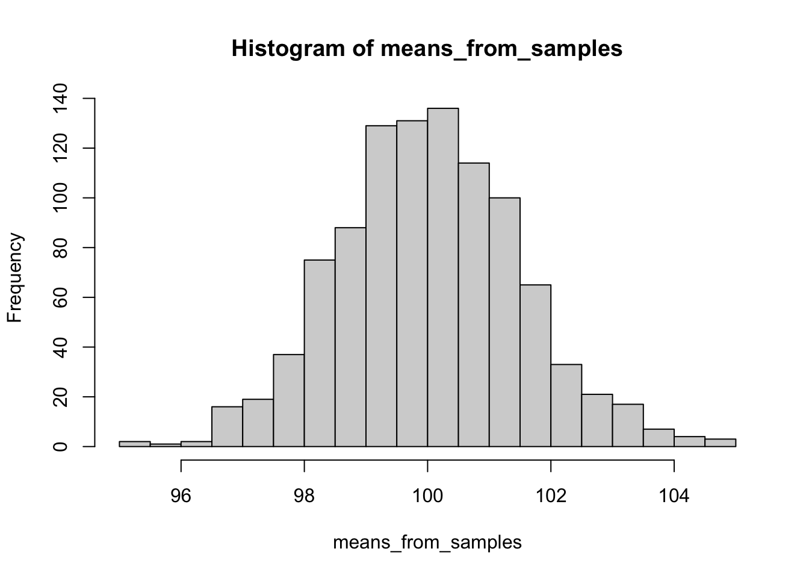

4 Вероятность
Что такое вероятность?
По сути, вероятность – это численно выраженая возможность наступления того или иного события.
Вероятность может рассматриваться как частота наступления уже свершившегося события: по тому, как часто оно происходило, можно оценить, какова вероятность его наступления в дальнейшем.
Здесь начинается неожиданная развилка: в зависимости от того, как мы понимаем вероятность, приравниваем ли ее к частоте, статистика делится на байесовскую (bayesian) и частотную (фреквинтистскую, frequentist). Статистика, в которой мы заменяем вероятности частотами, а не высчитываем вероятность по сложной формуле, и в которой мы будем работать – частотная (https://en.wikipedia.org/wiki/Frequentist_inference). То есть говоря о вероятности, мы будем понимать ее исключительно так же, как и частоту, забываем про существование условной вероятности, формулу полной вероятности и других сложных концепций: если бы мы провели много раз одно и то же исследование, скажем, тысячу, и посмотрели, сколько раз в этом исследовании выпадает результат, который нас интересует, мы бы сказали, что вероятность наступления этого события – это сколько раз оно выпадало из тысячи. И будем руководствоваться только этим смыслом.
Есть разные определения, в рамках статистики различают статистическое и геометрическое определение вероятностей. Можно углубиться на http://mathprofi.ru/sluchainaya_velichina.html. Разные определения вероятности используются в зависимости от того, с какими случайными величинами (СВ) мы работаем, различают два их типа: * дискретные СВ * непрерывные СВ
4.1 Дискретные СВ и статистическое определение вероятности
Самая часто используемая в теории вероятностей модель – бросание обычного шестигранного игрального кубика. Кубик отличает то, что всего возможно наступление 6 событий (не будем рассматривать, что кубик смещенный или какой-то неправильный). То есть область допустимых значений или область определения для случайной величины “бросок кубика” это 6 значений: $ D {1, 2, 3, 4, 5, 6}$
Величина, область значений которой состоит из конечного числа натуральных чисел (1; 2; 3; 4; 5…), называется дискретной.
Для определения вероятности дискретной величны воспользуемся ее статистическим определением, не углубляясь в статистические термины: если при проведении испытания возможны \(n\) равновероятных исходов значений случайной величины \(A\), при этом в \(m\) из них случается интересующее нас конкретное событие \(A_{i}\),то вероятность наступления события \(P(A_{i}) = \frac{m}{n}\)

Бросание игрального кубика – это испытание, выпадение одной из граней – исход, а выпадение конкретно шестерки – событие.
Обозначим выпадние грани в результате бросания кубика буквой \(K\). Чему равна вероятность выпадения каждой грани \(K_{1}\), \(K_{2}\), \(K_{3}\), \(K_{4}\), \(K_{5}\), \(K_{6}\)?
По статистическому определению вероятности: возможных исходов всего – 6, интересующее нас событие случается в одном случае из 6, то есть: \(P(K_{1})\) = \(P(K_{2})\) = \(P(K_{3})\) = \(P(K_{4})\) = \(P(K_{5})\) = \(P(K_{6})\) = \(\frac{1}{6}\)
Важно, что все события равновероятны. Если бы мы жили в мире с кубиками со смещенным центром тяжести, выпадние граней не было бы равновероятным.
А чему равна полная вероятность?
Как можно вывести это математически из вероятностей наступления событий в бросании игрального кубика? \(P(K_{1})\) + \(P(K_{2})\) + \(P(K_{3})\) + \(P(K_{4})\) + \(P(K_{5})\) + \(P(K_{6})\) = \(1\)
Единичные события нас мало интересуют (предмет изучения теории вероятностей – массовые события), поэтому давайте представим, что мы бросили кубик несколько раз. Например, 20.
## [,1] [,2] [,3] [,4] [,5] [,6] [,7] [,8] [,9] [,10] [,11] [,12] [,13] [,14]
## Red 4 2 1 4 2 2 6 3 4 1 3 1 1 4
## [,15] [,16] [,17] [,18] [,19] [,20]
## Red 2 2 4 2 2 64.2 Столбчатая диаграмма
Построим таблицу частот выпадения каждой грани
## rolls
## 1 2 3 4 6
## 4 7 2 5 2## rolls
## 1 2 3 4 6
## 0.20 0.35 0.10 0.25 0.10Можем наглядно посмотреть это на столбчатой (столбиковой) диаграмме – графике, отображающем частоты встречаемости событий дискретной переменной.

Гистограмма – это частный случай столбчатой (или столбиковой) диаграммы. Она отличается от столбчатой диаграммы тем, что, в отличие от нее, мы сами можем регулировать ширину столбика по оси \(x\), задавать, сколько значений переменной х в него войдет, и высотка столбика будут пересчитана в зависимости от этого количества. В столбиковой диаграмме мы так сделать не можем, по оси \(x\) всегда только одно значение, каждый столбик соотносится с конкретным значением переменной.
4.3 Непрерывные СВ и геометрическое определение вероятности
С непрерывными величинами чуть посложнее, поэтому нам понадобится геометрическое определение вероятности.
Построим отрезок на оси \(x\) от 0 до 1.
Допустим, мы проводим испытание, где бесконечно малым курсором проводим по этому отрезку. Остановку курсора в какой-то точке обозначим за \(L\). Какова вероятность, что курсор остановится в точке с координатами \(x=0.4857856\)?
Сколько точек лежат в этом отрезке? Вспоминаем, что точка – бесконечно малая величина, поэтому на этом отрезке лежит бесконечное число точек. Область допустимых значений или область определения для случайной величины “остановка курсора в точке” – бесконечное число значений в диапазоне \(D \in [0;1]\)
Величина, область допустиимых значений которой состоит из бесконечного числа значений на каком-либо ненеулевом промежутке, которые невозможно посчитать, называется непрерывной.
Попробуем воспользоваться статистическим определением вероятности:
\(P(L_{.4857856}) = \frac{1}{множество всех точек на отрезке} = \frac{1}{\infty} \sim 0\)
В пределе это число равно 0.
Получается, что мы не можем посчитать математически (статистически), и приходится прибегать к геометрическому определению.
4.4 График плотности вероятности и гистограмма
Построим таблицу и график частот для значений из отрезка. Для это сгенерируем набор из 10 случайных чисел в диапазоне [0;1].
## [1] 0.9148060 0.9370754 0.2861395 0.8304476 0.6417455 0.5190959 0.7365883
## [8] 0.1346666 0.6569923 0.7050648## line_sample
## 0.13466659723781 0.286139534786344 0.519095949130133 0.641745518893003
## 1 1 1 1
## 0.656992290401831 0.705064784036949 0.736588314641267 0.830447626067325
## 1 1 1 1
## 0.914806043496355 0.937075413297862
## 1 1## line_sample
## 0.13466659723781 0.286139534786344 0.519095949130133 0.641745518893003
## 0.1 0.1 0.1 0.1
## 0.656992290401831 0.705064784036949 0.736588314641267 0.830447626067325
## 0.1 0.1 0.1 0.1
## 0.914806043496355 0.937075413297862
## 0.1 0.1Видим, что все значения встретились только один раз. Построим график. Можем построить гистограмму для этих значений:

Получается довольно странно: мы видели, что частота встречаемости разных значений – всегда была единичка, а на гистограмме кажется по-другому. Так происходит, потому что мы взяли только 10 очень конкретных крошечных значений из непрерывной величины, и нам попались какие-то значения – рядом друг с другом, и столбики для их частот “слиплись” в один большой столбик, и частота получилась не 1, а 2. А какие-то значения попались далеко друг от друга, поэтому их столбики слиплись не друг с другом, а с более близкими к ним столбиками, и на месте частоты для этого значения образовалась дырка.
Такой график для непрерывной величины не очень верный: чтобы стобики не “слипались” и не обманывали нас визуально, будто где-то в значениях есть дыра, для непрерывных величин мы будем использовать другой график – график плотности вероятности (probability density)
 Он тоже показывает так, будто какие-то значения более частые, какие-то менее – но ситуация уже гораздо лучше. Здесь мы сгенерировали 10 значений, а если нам вдруг нужно визуализировать все возможные значения из отрезка [0;1], а х бесконечность? Тогда гистограмма вообще потеряет всякий смысл, так как разбивает все значения на столбики из конечных интервалов, а вот непрерывная линию будет подходящей – в непрерывной линии бесконечное число значений! То есть выходит следующая логика: для визуализации дискретных величин обычно используют гистограмму, для визуализации непрерывных – график плотности вероятности.
Он тоже показывает так, будто какие-то значения более частые, какие-то менее – но ситуация уже гораздо лучше. Здесь мы сгенерировали 10 значений, а если нам вдруг нужно визуализировать все возможные значения из отрезка [0;1], а х бесконечность? Тогда гистограмма вообще потеряет всякий смысл, так как разбивает все значения на столбики из конечных интервалов, а вот непрерывная линию будет подходящей – в непрерывной линии бесконечное число значений! То есть выходит следующая логика: для визуализации дискретных величин обычно используют гистограмму, для визуализации непрерывных – график плотности вероятности.
Почему плотности вероятности, а не самой вероятности? Потому что как мы вывели выше, если бы мы считали точно именно вероятность, она бы стремилась к нулю. А засчет того, что это именно плотность, буквально, “тут побольше значений”, “тут поменьше значений” – получается осмысленный график. То есть, простыми словами, плотность вероятности – характер распределения вероятностей в самом значении и его окрестности. Если в интервале [0.25;0.35] оказалось (чисто случайно) мало значений, а в интервале [0.58;0.65] оказалось побольше – то на графике плотности вероятности мы увидим различия в вероятности для этих интервалов, хотя вероятность встретить каждое конкретное очень точно заданное число (например, 0.4857856) стремится к 0. Мы не будем рассматривать математически смысл плотности вероятности, но функция плотности вероятности является производной от функции самой вероятности.
Попробуем сгенерировать этот же график для 500 и 10 000 точек и посмотреть, к чему будет стремиться график плотности вероятности в случае, когда мы случайно генерируем множество значений, все из которых равновероятны?
line_sample_500 <- runif(500, min=0, max=1)
as_tibble(line_sample_500) %>%
ggplot(aes(x=value)) +
geom_density() +
theme_minimal() 10000 точек из этого же диапазона
10000 точек из этого же диапазона
line_sample_10000 <- runif(10000, min=0, max=1)
as_tibble(line_sample_10000) %>%
ggplot(aes(x=value)) +
geom_density() +
theme_minimal()
Итак, запомнили, что мы рассматриваем признаки (переменные) как случайные величины, они могут быть дисркетные и непрерывные, и их вероятности описываются определенными законами распределения.